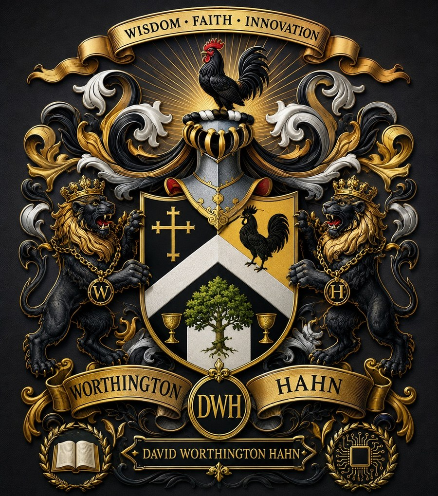
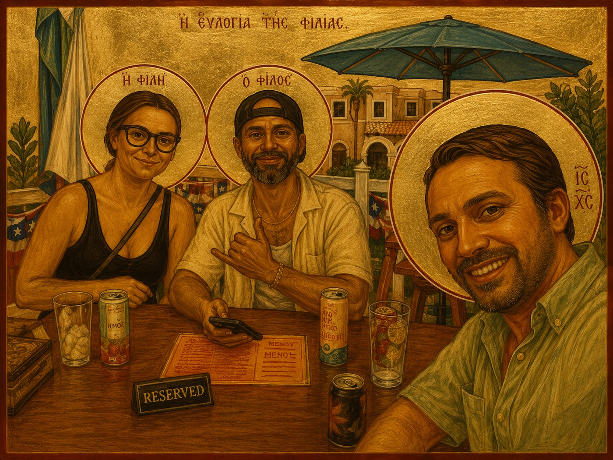
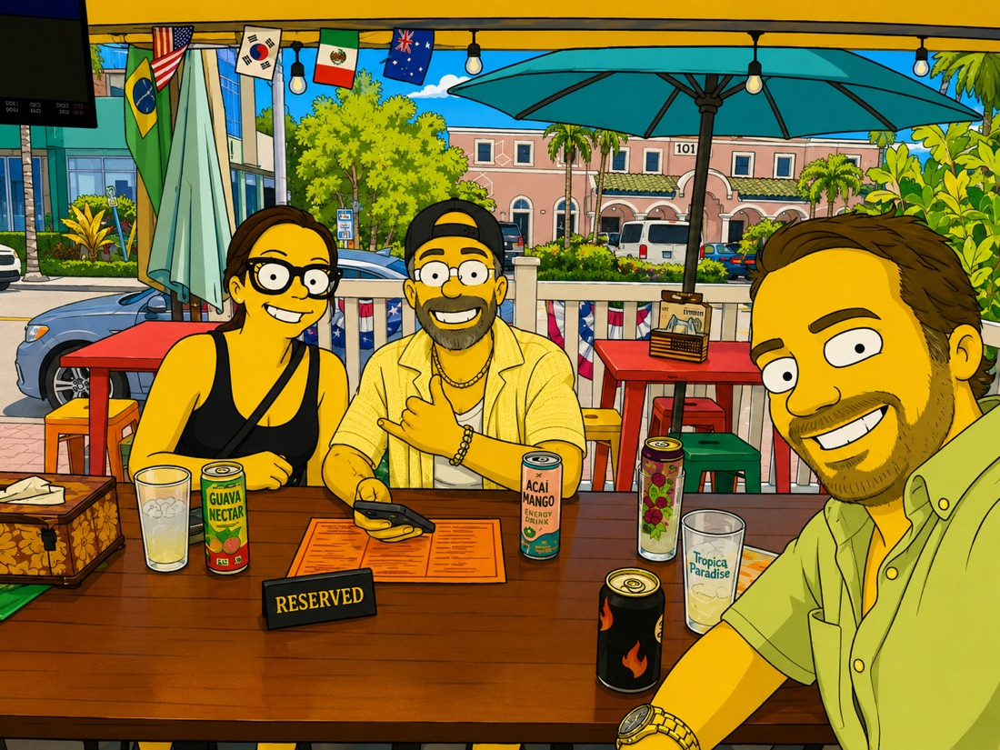

A man who was given his life back, now spending it building things meant to be given away. Whatever good comes of any of it belongs to God, not to me.
“Unless the Lord builds the house, they labor in vain who build it.” — Psalm 127:1
I'm not the man I used to be — and that's the whole point. Addiction and prison took years from me; a coma nearly took the rest. But by a grace I didn't earn, I made it home. I learned to read after I was baptized, earned my first A's in a cell, and walked out to a friend waiting at the gate. I never forget the lean years — oatmeal is better than no meal, and plenty of days that was the meal.
Today I build a whole family of companies out of New Bern, but not to chase money, and not to make a name. I build so I have something to give. Every venture is a way to turn a second chance into second chances for other people. None of it is mine to take credit for; I'm just the one holding the tools. Keep reading and I'll show you what that looks like.
"If God can restore a man like me, He can restore anyone. That's not marketing. That's my life."
“The Lord is my shepherd; I shall not want… He restoreth my soul.” — Psalm 23
That Psalm isn’t a decoration to me — it’s the story of my life. He walked me through the valley, restored a soul I’d given up on, and set a table where I never expected one. So I build to bless: honest work for people the world wrote off, clean water for the thirsty, a hand for children a world away in Pakistan, and a real second chance for anyone who needs one — because I got mine, and I’ll never forget it.

My testimony is a loud one. Prison, a coma, a life handed back to me. People hear it and they think grace has to arrive like a rescue.
Then my brother took a plain photograph from his own birthday — the three of us around a table, a menu, a couple of drinks, nobody doing anything important — and rendered it like a holy icon. Gold ground. Greek across the top. Halos on people I have known my whole life.
“He prepareth a table before me.” I always read that as rescue. It might just as easily be lunch.
That is the half of the story I do not tell enough. Grace showed up in the cell, yes. It also shows up at a table with people who love you, on an ordinary afternoon, when nothing is wrong. Most of a restored life is ordinary. That is not the boring part — that is the gift.
One thing I should say plainly. The halo over my face carries the Greek letters for Jesus Christ. I did not ask for that and I would never claim it. My brother was playing with a tool and it borrowed the oldest visual language it knows for holy. I am the one at that table who needed the most forgiving — if anything belongs over my head, it is a reminder of who did the forgiving, not a promotion.
I am leaving it up anyway. Not because it is fine art, and not because I am anybody’s saint — but because my brother looked at an ordinary afternoon with his family and saw something worth gold leaf. He was right about the afternoon.

One family, many ventures, one mission, built honestly, to give back. He gets the credit; we just show up and do the work.
Need help, want to partner, or just want to say hello? I'd love to hear from you.
Ready to build your vision with me? Text to book a $50 consultation →
Credited toward your project when we work together.
The crest at the top of this page is new. The two halves of it are not.
The Worthington side came down through my grandmother, Martha Worthington Abernathy — Ayden High valedictorian, a chemistry degree from Chapel Hill, and then thirty-odd years behind the counter of the family store. It came down to her from her father, my great-grandfather Thelbert Worthington — a tobacco man who owned land and property around Ayden, North Carolina, and ran Worthington's Variety Store on Lee Street downtown. He was known in that town.
In 1930 he built a red brick house there with Doric columns across the porch. He bought the plans for thirty-five dollars out of a pattern book by Leila Ross Wilburn, an Atlanta architect and one of the few women practicing architecture in the South at the time. That house is still standing, still lived in, and it is on the National Register of Historic Places as the Thelbert Worthington House. A country merchant ordered his home out of a catalog for thirty-five dollars, and ninety-six years later it is a landmark.
The story that got told about that house is that a deer came through it one day when he was already an old man, and he put it down with a wooden chair. It made the local paper. I can't vouch for every detail — I was a boy — but I have never once doubted it, because it is exactly the kind of thing that man would do.
He lived to be ninety-eight, the last of it in my grandmother's house by the park. I was there for that birthday. He gave me a five-dollar bill. That is my whole first-hand memory of him, and it is enough — because he had one line for every customer who ever walked through his store door: “Keep picking.” Generations later I am still doing what he did, just with a different counter.
The Hahn side came from Germany, with my father, Edward Nicholas Hahn. Hahn is the German word for rooster — which is why a rooster crowns this shield and stands on it, and why a rooster has been my mark for years without me ever having to explain it. I'm told there is a Hahn castle still standing over there. I haven't seen it. I intend to.
So the two lions hold the shield between them: one wearing a W, one wearing an H. A merchant family from a small North Carolina town on one side, a German name that means rooster on the other. Both of them are me.
Neither crest was ever mine to inherit, exactly, so I built a third one — I used AI to bring the two together into something for what comes next. Old plus new. That's the whole idea, and it's why the wreath at the bottom carries a book on one side and a circuit board on the other, under three words I try to run everything by: Wisdom, Faith, Innovation.
"The past gave me the pieces. The future is only a rumor. Old plus new is the moment — and the moment is all any of us actually have."
I walked to Roberts Elementary in Moorestown, New Jersey, with my brother William. In fourth grade Will became a school safety — a volunteer crossing guard — under our science teacher, Mr. Gill. A proud little brother, watching his big brother hold the corner. Go Will.
When my father passed, everything moved. I spent a transition year at a school in Franklinville — where I met Shannon Stetser, and we rode dirt bikes and just got to be kids for a while. Then came St. Augustine Prep — the Hermits — an all-boys prep where I took three years of Spanish and a year of Italian, and traveled with my class to Las Vegas, Atlantic City, Costa Rica, and Paris.
Later, Guilford College, and DeVry University for Health Information Technology — where, after my baptism, I earned straight A's for the first time in my life. And then I was called out of the classroom and into building something of my own.
"Every road I walked — even the wrong ones — God was using to teach me. The classroom was never the only school."
Mother Teresa said it better than I ever will: “Never worry about numbers. Help one person at a time, and always start with the person nearest to you.” That is how every one of these companies actually got built. Not a business plan. The person standing next to me, and then the next one.
My rolodex is long and most of it will never appear on a website, because the people in it did not sign up to be marketing. But there are a few I can name, because their work is already public and because none of this exists without them.
My brother, Dr. William Edward Hahn. Guilford College for mathematics and physics, a master’s from UNC Greensboro, and a doctorate from Florida Atlantic University in 2016. In 2014 he co-founded the Machine Perception and Cognitive Robotics Laboratory at FAU, where he is co-director, and he directs the university’s Center for Complex Systems. His research is medical imaging, neural networks, and deep learning — the actual science, done in an actual lab, with his name on the papers.
He is also the fourth-grade school safety who held the corner on the walk to Roberts Elementary while his little brother watched. Same man. He is the one who took a plain photograph from his own birthday and rendered it like an icon, which is the image at the top of this page. When I say the technology in these ventures is real, that is the standard I am holding myself to — because he would tell me if it was not.
Because Will teaches there, the lab bench at FAU is not an abstraction to us either. Spencer and Nick came out of that world — the AI and software engineering side — and they build the tools these companies actually run on. That is the part I could never have bought: a pipeline to people who are genuinely good at this, because my brother spends his days teaching them.
Hahn AI. AI advisory and implementation for small business, run in the family. It is a separate house with its own front door at hahn.ai, and I am glad to be standing next to it rather than in front of it.
And then there are the ones who started as customers. Bobby and others like him found us through the tea, of all things — ordered something, came back, kept coming back, and somewhere in there stopped being customers and became friends. Some of them work with me now. I did not recruit a single one of them. A lead technician who actually fixes things, a CPA who keeps the numbers honest, a brand partner, contractors, mentors, a stock-and-options friend who has never once let me get away with a lazy number. Most of the rest I met at a dog park in New Bern.
Every one of these companies grew the same way, and it is worth naming plainly: by attraction rather than promotion. I have never had an advertising budget worth the name. What I have had is people who tried the thing, liked it, and told somebody. That is slower than buying attention. It is also the only kind of growth I have ever seen hold.
“I work with the person next to me, and I try to love them like myself. That is the whole strategy. It has never once let me down.”